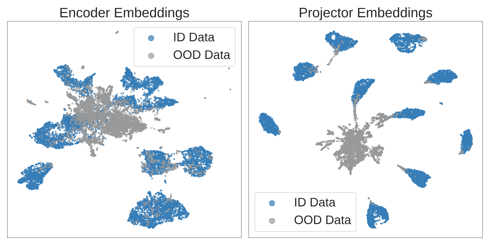
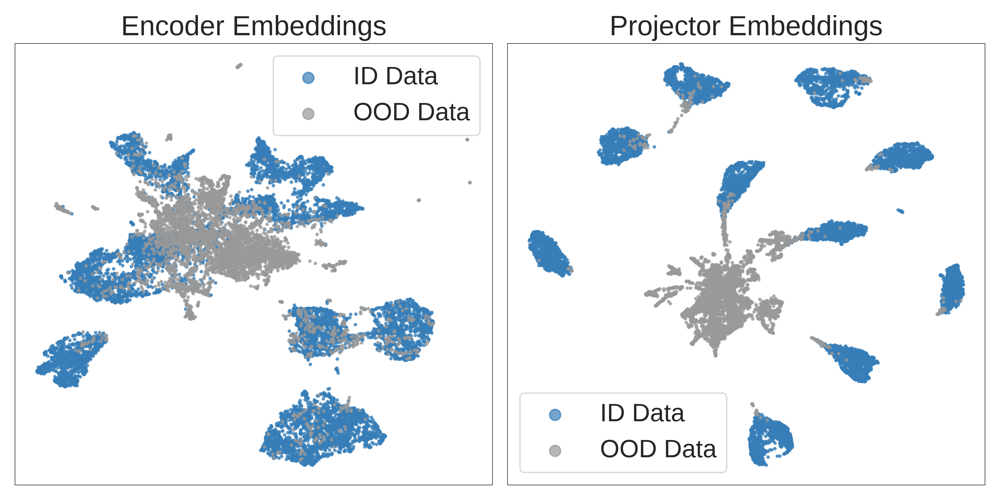
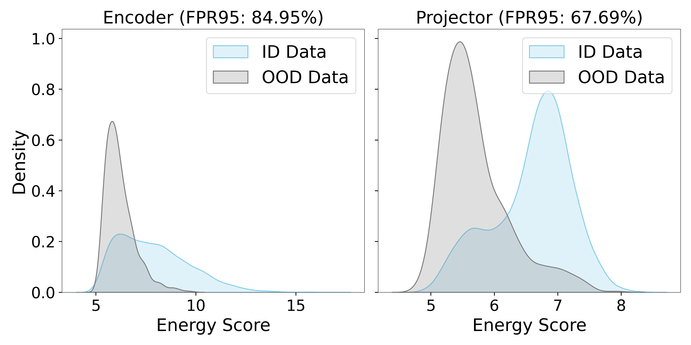
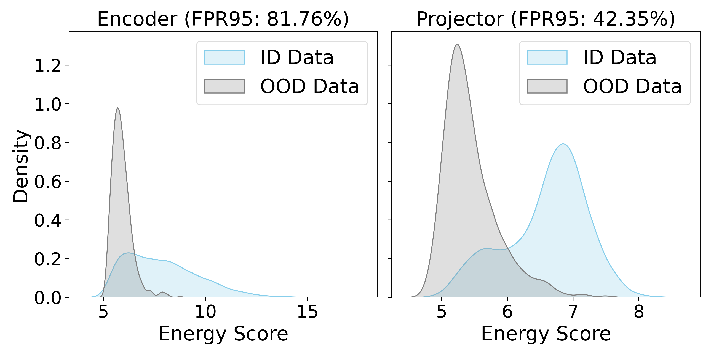
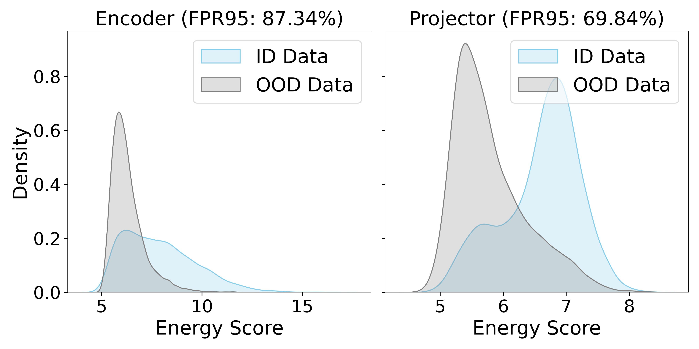

UMAP Visualization of ID & OOD Data
The projector exhibits a greater separation between ID and OOD embeddings than the encoder. For clarity, we show ImageNet-10 as ID data and NINCO-64 as OOD data.
Out-of-distribution (OOD) detection and OOD generalization are widely studied in Deep Neural Networks (DNNs), yet their relationship remains poorly understood. We empirically show that the degree of Neural Collapse (NC) in a network layer is inversely related with these objectives: stronger NC improves OOD detection but degrades generalization, while weaker NC enhances generalization at the cost of detection. This trade-off suggests that a single feature space cannot simultaneously achieve both tasks. To address this, we develop a theoretical framework linking NC to OOD detection and generalization. We show that entropy regularization mitigates NC to improve generalization, while a fixed Simplex Equiangular Tight Frame (ETF) projector enforces NC for better detection. Based on these insights, we propose a method to control NC at different DNN layers. In experiments, our method excels at both tasks across OOD datasets and DNN architectures.
We train various DNNs on ImageNet-100 (ID) and evaluate OOD generalization and detection using eight OOD datasets. Our method effectively optimizes both objectives. The encoder mitigates neural collapse (NC) and enhances OOD generalization, while the ETF projector amplifies NC and improves OOD detection. Compared to baselines, our method consistently improves both OOD detection and generalization across diverse DNN architectures.
The projector exhibits a greater separation between ID and OOD embeddings than the encoder. For clarity, we show ImageNet-10 as ID data and NINCO-64 as OOD data.
The projector exhibits a greater separation between ID and OOD energy scores than the encoder. For ID and OOD datasets, we show ImageNet-100 and NINCO-64, respectively.
The projector creates a greater separation between ID and OOD data and achieves a lower FPR95 than the encoder.
The projector better separates ID and OOD data, achieving a lower FPR95 than the encoder.
(a) Entropy regularization reduces neural collapse (indicated by higher NC1 values) in the encoder.
(b) Entropy regularization increases the entropy of encoder embeddings otherwise entropy remains unchanged.
(c) Entropy regularization increases the effective rank of encoder embeddings otherwise effective rank remains as low as the number of classes (i.e., 10 ImageNet classes).
(d) L2 normalization increases neural collapse (indicated by lower NC1 values) in the projector.
This work was partly supported by NSF awards #2326491, #2125362, and #2317706.
@article{harun2025controlling,
title = {Controlling Neural Collapse Enhances Out-of-Distribution Detection and Transfer Learning},
author = {Harun, Md Yousuf and Gallardo, Jhair and Kanan, Christopher},
journal = {arXiv preprint arXiv:2502.10691},
year = {2025}
}